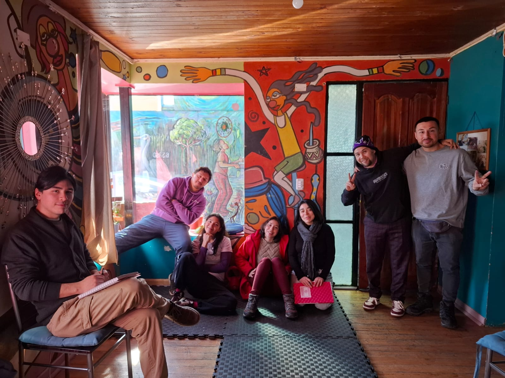
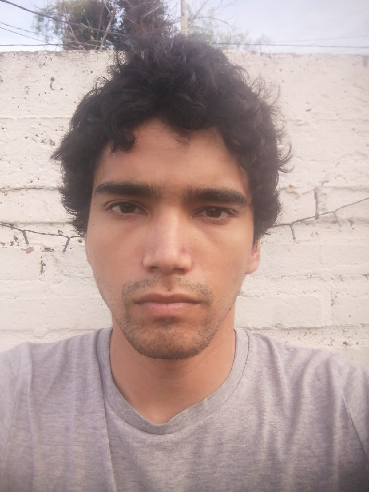

Centro Cultural El Espacio: Pilar Territorial del Proyecto
El diseño y validación de esta iniciativa fue posible gracias al compromiso del Centro Cultural El Espacio, organización comunitaria ubicada en Talca que nace en 2015 a partir de la necesidad de artistas vinculados a las artes circenses de contar con un espacio físico de creación y encuentro.
Trayectoria y Aporte Comunitario en Talca
Desde su fundación en 2015, El Espacio ha evolucionado hasta consolidarse como un referente cultural abierto a toda la comunidad talquina, impulsando procesos permanentes de creación, formación, exhibición y vinculación dirigidos a niños, adolescentes, jóvenes y adultos interesados en las artes y la cultura.
Su apertura para recibirnos en terreno, compartir sus registros operativos y analizar críticamente nuestras propuestas permitió transformar una idea teórica en una herramienta útil para los gestores culturales reales del territorio.
Ficha del Socio Comunitario
- OrganizaciónCentro Cultural El Espacio (Talca)
- Año de origen2015 (Artes circenses y cultura comunitaria)
- Dirección3 Oriente #1874, entre 7 y 8 Norte, Talca
- AdministradorCristian Hernández
- Correocentroculturalelespacio@gmail.com
- Teléfono+56 9 9056 4487

Aproximación al Territorio y Levantamiento de Evidencia
Durante el primer semestre de 2026 y principios del segundo semestre de 2026, desarrollamos un proceso continuo de investigación aplicada junto al Centro Cultural El Espacio para comprender sus dinámicas de difusión y vinculación.
1. Observación Participante
Conocimos en terreno el espacio físico, su infraestructura, condiciones de accesibilidad y dinámicas cotidianas, asistiendo presencialmente a talleres y actividades abiertas a la comunidad.
2. Reuniones y Focus Group
Realizamos encuentros participativos y grupos focales con integrantes y administradores del centro para conocer su funcionamiento interno, redes, preocupaciones y principales problemáticas.
3. Caracterización y Diagnóstico
Sistematizamos la información levantada para identificar causas y consecuencias críticas en torno a la visibilidad pública y la articulación con otras instituciones.
La situación enfrentada
- Dependencia exclusiva de Instagram: Escasa difusión hacia la comunidad cercana al mantener únicamente una red social como canal de contacto.
- Vínculos institucionales intermitentes: Relación poco permanente con universidades, municipios y organizaciones locales.
- Falta de instrumentos de gestión: Ausencia de documentación representativa o herramientas digitales de bajo costo operativo.
Impacto en la gestión cultural
- Menor alcance ciudadano: Dificultad para convocar nuevos participantes que no siguen previamente las cuentas de cada centro.
- Barreras para alianzas: Complejidad para generar y mantener redes de colaboración en el tiempo.
- Menores oportunidades de financiamiento: Restricciones para acreditar alcance e impacto ante fondos concursables.
- Fragmentación cultural: Debilitamiento de la participación y del tejido cultural local en Talca.
De "Conecta Espacios" al Calendario Cultural Automatizado
Ante la pregunta "¿Cómo fortalecer de manera permanente la difusión de actividades y la articulación cultural?", contrastamos nuestras propuestas iniciales con la realidad operativa de los administradores culturales.
Alternativas Iniciales Descartadas
- Campaña en redes sociales: No resuelve la dispersión de información ni crea un punto de encuentro permanente.
- Web aislada por centro: Alcance limitado si cada espacio opera como una isla sin tráfico compartido.
- Plataforma B2B compleja (Conecta Espacios): Requería llenar fichas extensas y bolsas de requerimientos difíciles de sostener para equipos pequeños.
Cuello de Botella Detectado
Las carteleras culturales tradicionales exigen que cada gestor ingrese a un portal externo, complete formularios y suba afiches manualmente cada semana.
Realidad en terreno: Los centros culturales comunitarios operan con equipos reducidos y falta de tiempo, por lo que concentran toda su difusión únicamente en Instagram.
La Respuesta: Automatización
El sistema se adapta a lo que el centro cultural ya hace todos los días: publicar su actividad en Instagram.
La automatización elimina la necesidad de un equipo técnico amplio: basta un encargado reducido para mantener la web e incorporar nuevos entes culturales verificados.
Hito de Validación Comunitaria y Giro Estratégico
Reunión clave: 26/10/2026 · 14:00 – 15:30 hrsEn la reunión sostenida el 26 de octubre de 2026 (de 14:00 a 15:30 hrs) junto a parte del equipo administrativo del Centro Cultural El Espacio, evaluamos la viabilidad real del proyecto. A partir de este encuentro, comprendimos que para lograr un aporte concreto y alcanzable era fundamental cambiar el rumbo hacia el Calendario Cultural del Maule, identificándolo como una solución mucho más realista, necesaria y abordable.
“El mayor potencial de nuestra propuesta no está en exigir más trabajo administrativo a los espacios culturales, sino en convertir su difusión cotidiana en un nodo ciudadano centralizado, confiable y accesible que potencie la cultura comunitaria.”
Un Proyecto Complementario al Ecosistema Cultural Existente
El Calendario Cultural del Maule se postula expresamente como una herramienta complementaria y no sustitutiva respecto de las plataformas públicas y sectoriales ya vigentes en Chile y la región. Nuestro objetivo es cubrir el tramo operativo que hoy queda descubierto: la captura automatizada de actividades comunitarias cotidianas publicadas solo en redes sociales.
Chile Cultura
Cartelera oficial del Ministerio de las Culturas. Complementamos su alcance integrando talleres y eventos barriales de rápida rotación que no alcanzan a ser cargados manualmente en el portal ministerial.
Mapa Cultural (MINCAP)
Directorio y catastro georreferenciado de espacios y agentes. Mientras Mapa Cultural caracteriza la infraestructura permanente, nuestro calendario dinamiza su agenda diaria de actividades abiertas.
AMA Maule
Plataforma regional de vinculación de artistas, compañías y programadores. Dialogamos con esta red acercando la programación resultante directamente al público ciudadano local.
Biblioredes y Red Local
Red de bibliotecas públicas y espacios comunitarios. Nuestro sistema permite articular en una misma vista ciudadana actividades literarias, circenses, musicales y municipales de Talca.
Objetivos, Impacto Esperado y Sostenibilidad
Estructura técnica del piloto en la comuna de Talca, diseñada para garantizar pertinencia territorial, autosustentabilidad financiera y crecimiento modular hacia nuevas disciplinas comunitarias.
Objetivo General y Específicos
Objetivo General: Implementar una plataforma web automatizada de difusión cultural en la comuna de Talca que centralice y visibilice la programación de entes culturales verificados, facilitando el acceso ciudadano sin sobrecargar administrativamente a las organizaciones.
- OE1 (Automatización): Validar un flujo de captura automática desde redes sociales hacia un calendario único ordenado por fecha, horario y categoría.
- OE2 (Articulación local): Consolidar el piloto junto al Centro Cultural El Espacio e incorporar progresivamente nuevos espacios comunitarios y oferta cultural de la Municipalidad de Talca.
- OE3 (Acceso ciudadano): Reducir las barreras de búsqueda informativa para vecinos y vecinas mediante filtros simples y enlaces directos a cada actividad.
Público Objetivo e Impacto Esperado (Piloto Talca)
Beneficiarios Directos: Centros culturales comunitarios, agrupaciones artísticas y espacios autogestionados de Talca que necesitan visibilidad constante sin disponer de personal informático.
Beneficiarios Indirectos: Ciudadanía general (niños, jóvenes, familias y adultos) interesada en participar de talleres, obras y encuentros culturales locales.
- Ahorro operativo: Reducción superior al 80% del tiempo que los gestores destinan a replicar difusión en canales externos.
- Cobertura comunal: Articulación inicial con el Centro Cultural El Espacio y proyección de adhesión de la Municipalidad de Talca y espacios independientes de la comuna.
- Mayor asistencia comunitaria: Incremento en la visibilidad de actividades barriales que hoy quedan ocultas por los algoritmos de redes sociales.
Autosustentabilidad de Bajo Costo
Una vez finalizada la etapa de financiamiento inicial (fondo concursable), la continuidad operativa del calendario se sostiene mediante un esquema de micro-suscripción solidaria de $5.000 CLP mensuales por ente cultural adherido.
- Accesible para organizaciones comunitarias: Monto simbólico adaptado a la realidad financiera de centros autogestionados.
- Servicio continuo garantizado: Cubre el alojamiento web, la sincronización automática permanente de sus publicaciones y el soporte técnico básico para mantenerlos siempre visibles en la cartelera comunal.
Expansión hacia Deportes y Encuentros de Nicho
La arquitectura modular del calendario permite replicar exactamente el mismo motor de automatización hacia una segunda línea dedicada al deporte recreativo y actividades competitivas no oficiales que hoy carecen de difusión centralizada:
- Deporte barrial y recreativo: Encuentros amistosos, talleres deportivos comunitarios y actividades al aire libre fuera de circuitos federados.
- Comunidades y torneos de nicho: Pequeñas competencias locales de ajedrez, juegos de mesa y torneos de videojuegos/e-sports (tanto presenciales en espacios comunitarios como en modalidad online).
Prototipo Funcional: Calendario Cultural del Maule
Explora la herramienta en funcionamiento. Puedes buscar actividades por palabra clave, filtrar por disciplina o centro cultural, navegar entre meses y hacer clic en los días marcados para ver horarios y enlaces directos.
El centro cultural verificado publica su taller, obra o evento en su cuenta de Instagram, tal como lo hace habitualmente.
El sistema extrae automáticamente la fecha, hora, lugar y clasifica el tipo de actividad sin intervención manual del gestor.
La actividad aparece ordenada en el calendario con enlace directo a la publicación original para inscripciones o consultas.
Responsables del Proyecto
Iniciativa interdisciplinaria desarrollada en Talca (2026) desde la carrera de Trabajo Social junto a colaboradores invitados de otras áreas de la Universidad Autónoma de Chile y el Centro Cultural El Espacio.
Marcos Cereceda Otárola
Acompañamiento metodológico y orientación académica del proceso de diagnóstico territorial, validación comunitaria y formulación del proyecto de innovación social.
Equipo de Trabajo Social

AG